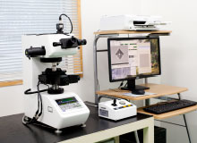
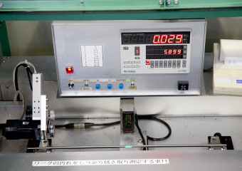

Quality management systemQuality management system
In order to ensure the reliable quality of the Shimomura brand, we have established comprehensive management systems. In addition to rigorous quality checks during each manufacturing process, we have the full range of high-precision inspection equipment. These systems ensure quality from every aspect.
Identification Technology Promises Peace of Mind
Spark inspection (SCM435)
Spark inspection (SUS 420J2)
A grinder is used on the steel material to generate sparks; the material can be identified by the color and shape of the sparks.
Materials Sorting
EC equipment and sorting devices are installed in-line. Materials identification is reinforced by irregularity and defect detection.
X-ray analysis
X-ray analysis equipment was introduced and composition analysis is performed to enhance material identification.
Emission spectroscopy analysis
In addition to material identification through irregularity detecting and X-ray analysis, emission spectroscopy analysis further enhances identification.
Defect Detection System Ensures Safety
Ultrasonic testing equipment (UT)
Ultrasonic testing detects defects inside products.
Provided by KJTD Co., Ltd.
Vertical: SDH ϕ 0.5 × 10 mm or more; angled: FBH ϕ 0.5 or more
Eddy current flaw detection device (EC)
Detects flaws in the surfaces of products.
EC Rotating Format
EC Pass-Through Format
Figures courtesy of Foerster Japan Limited
Defect depth: 0.1 mm × Defect length: 10 mm
Internally-Developed Quality Management Equipment
CG Circularity Monitoring Device

Circularity measurements are performed within the CG line, enabling defects to be detected at an early stage.
WD Localized Bending Detector
Detects localized bending of coils in the WD line, enabling defects to be detected at an early stage.
CM Localized Tapering Detector

Localized tapering is detected in the CM line, preventing release of defective products.
Enhanced High-Performance Inspection Equipment
SEM/EDX analysis device

Digital microscope

Fully-automated hardness tester (Vickers)

Hardness tester (Rockwell/Brinell)

All-purpose tensile strength tester

High-Straightness Products
Short-distance deflection tester
Shimomura has the technological levels to support rigorous straightness requirements.
Quality examples
φ7 ≦0.02 mm/150 mm
φ5 ≦0.02 mm/255 mm
φ3 ≦0.01 mm/50 mm
Automatic cylindricity measuring instrument
Shimomura products have the technological levels to support cylindricity requirements that are stricter than standards (one-half of tolerance).
Quality example
φ10 (0,-10) ≦4μm
High Circularity Products
Circularity measuring instrumentShimomura products have the technological levels to support circularity requirements that are stricter than standards (one-third of tolerance).
Quality example
φ6 (+6,+2) ≦1.3μm
High-Precision Control of Surface Roughness of Grinding Products
Surface roughness measuring instrument
Shimomura products have the technological levels to support surface roughness requirements that are stricter than standards (Ry≦3.2μm).
Quality example
φ2 Ry≦1.6μm
Narrow Tolerance Products
Dimension measuring instrumentDrawn products have the technological levels to comply with tolerance requirements that are stricter than standards (h9).
Quality example
φ10 0.010 mm / φ1 0.010 mm
Gliding products have the technological levels to comply with tolerance requirements that are stricter than standards (h7).
Quality example
φ6 0.004 mm